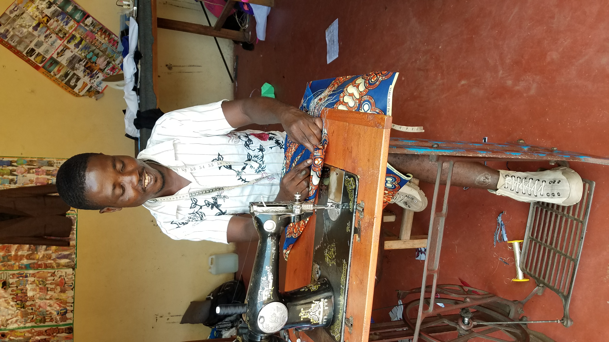

NSABIMANA JACQUES
C'est un professionnel de l'habillement qui réalise des vêtements personnalisés, travaillant en sous-traitance pour des maisons decouture, en ateliers de couture
Au sein de son atelier, il effectue toutes ses activités sur une table de coupe. Il prend des mesures, coupe des vêtements, sur toile ou directement dans le tissu, monte, essaie et procède aux retouches et finitions. Il dessine, patronne, coupe, couds, et assure ainsi la conception et la réalisation entière de vêtements (féminins ou masculins). A la fois modéliste, coupeur, mécanicien et conseiller, il sait mettre en valeur la silhouette de ses clients.
Professionnel du sur mesure. Il sait répondre aux attentes du client, établir avec lui une relation de confiance, le mettre en valeur et répondre à ses attentes.
C'est un technicien, qui connaît bien les matières, et possède parfaitement toutes les techniques de couture. Il a une vraie formation technique : coudre, faire un patron, connaître les tissus, etc.
On forme aussi de futurs couturiers à un prix abordable sur une formation de Haute qualité , nous serions ravis de vous aider si intéressé à atteindre vos projets en tant que couturier .
 ESTHER
ESTHER


Petite défilement des modèles que nous réalisons Bien que ça n'est pas complet mais ça vous donne un petit aperçu de ce que nous pouvons faire , la créativité est notre devise , vous ne serez pas deçu .
VENTE DES PAGNES
Nous vendons des pagnes de Qualité , d'origine congolaise ,c'est pas la porte d'à coté. ils sont d'une texture inémbralable et sont vraiments très resistants , ils se demarquequent aussi grace
à leur coté chramant et embellissant .
Si inerressé contacter nous au :+257 38T458144 ou 68117118